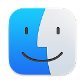
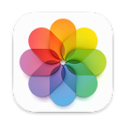
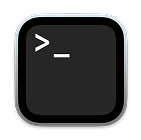
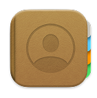

DevOps Engineer - 2 @ CSG International
I design, automate and run cloud infrastructure — mostly on AWS. My day-to-day is Kubernetes/EKS, Terraform, GitOps and observability, and I care deeply about systems that heal themselves and pipelines nobody has to babysit.
Running production EKS clusters, driving zero-downtime Kubernetes upgrades, and pushing everything through Infrastructure-as-Code and GitOps.
Multi-AZ web architecture — ALB → auto-scaling app tier → Multi-AZ RDS, fully defined in Terraform. Self-healing and horizontally scalable.
Terraform-provisioned EKS platform with Karpenter, IRSA and GitOps-managed add-ons — plus a blue/green node rotation strategy for upgrades with zero customer impact.
Multi-node HA Kubernetes built from scratch — Terraform for infra, Ansible for kubeadm bootstrap. One command from zero to a running cluster.
GitHub Actions → ECR → GitOps sync → canary rollout. Scanned images, immutable tags, progressive delivery and auto-rollback.
Prometheus + Grafana + Loki stack — metrics, logs and alerting with SLO tracking for cloud-native workloads.
The stack I use to build, ship and run infrastructure.
My journey so far in DevOps and automation
CSG International · 2024 – Present
CSG International · 2023 – 2024
Rakuten · 2022 – 2023
Maintained Linux servers, wrote Bash and Python automation scripts, and supported CI pipelines on Jenkins for application teams.
Tata Consultancy Services · 2021 – 2022
Multi-AZ · self-healing · 100% Infrastructure-as-Code
terraform apply rebuilds the entire stack in a new region.Reproducible clusters · GitOps add-ons · zero-downtime upgrades
From zero to a highly-available cluster, with one command
Multi-node HA Kubernetes built from scratch — Terraform provisions the VMs and network, Ansible roles bootstrap the cluster with kubeadm. No manual steps in the critical path.
kubeadm upgrade playbooks, so workloads reschedule gracefully.Zero-downtime deployments with GitOps and progressive delivery
Full-stack observability — metrics, logs and SLOs in one place
Have an idea, a role, or an infrastructure problem worth solving? My inbox is always open.
Open to DevOps / SRE / Platform Engineering roles and collaborations.